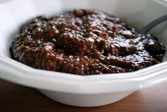
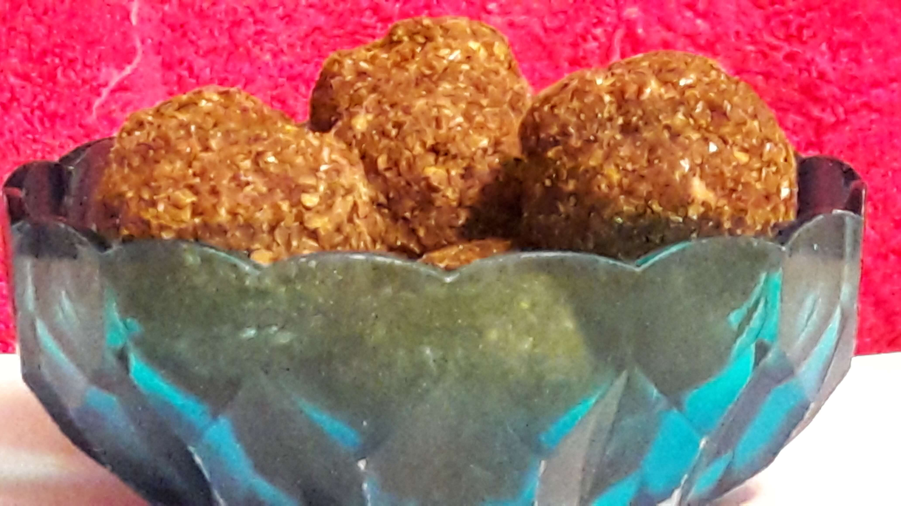
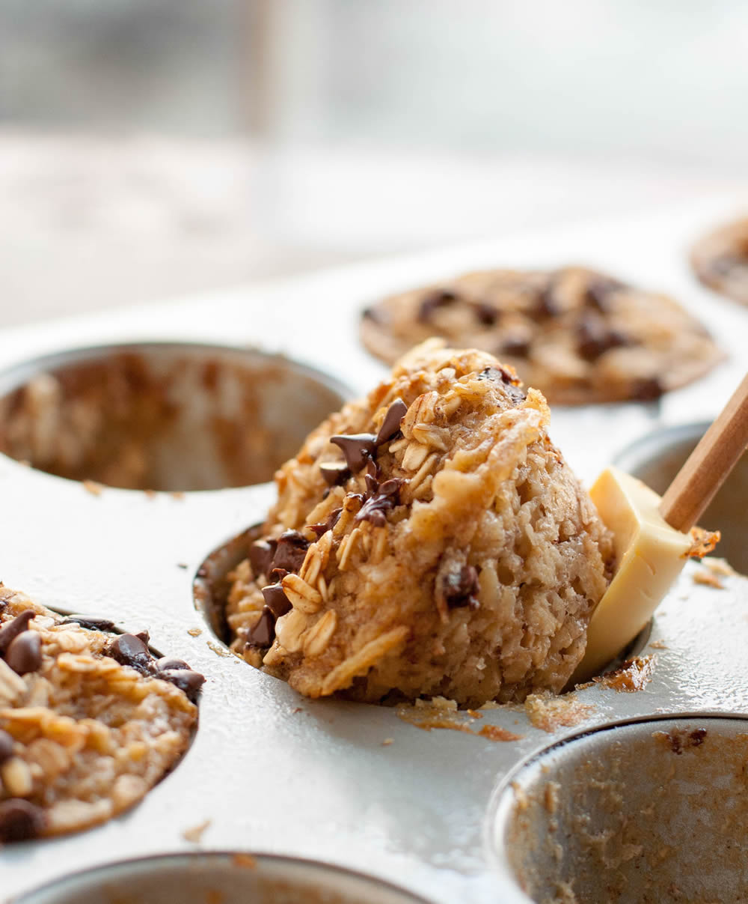
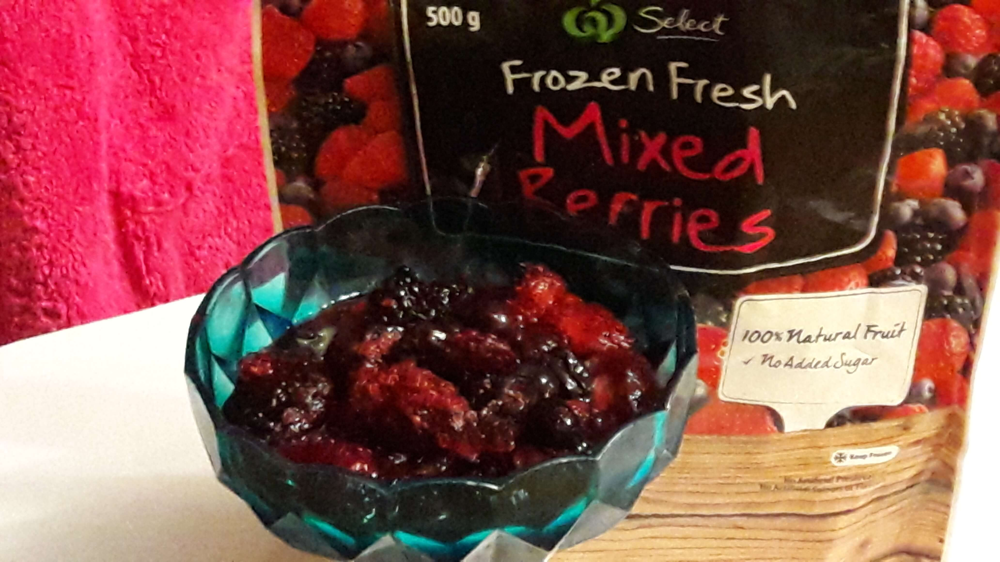
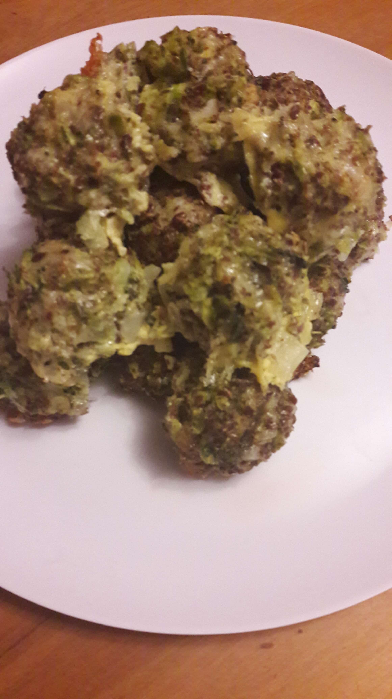
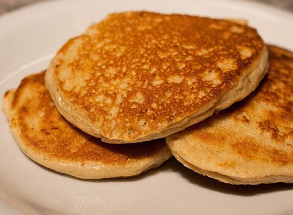
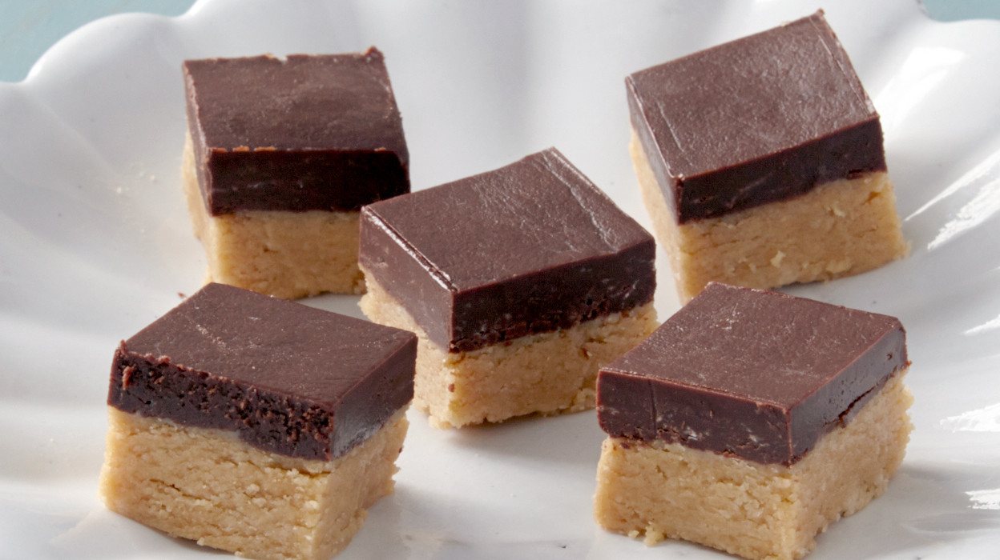

Chia Seeds Choc Pudding
- ¼ Almond milk
- 1 scoop chocolate protein powder
- 1 cup frozen mixed berries
- 1 Tbsp. cocoa powder
- 1 Tbsp. Chia seeds (more for garnish)
- ½ cup spinach
- Pour Almond Milk into a blender, then add the remainder of the ingredients.
- Blend on high until a smooth thick batter is produced.
- Pour into a bowl and garnish with more Chia seeds.

Coco-Peanut Butter Balls
- 3 scoop Protein powder
- ¼ cup Flaxseed meal
- ½ cup peanut butter
- Mix all together, add water if needed.
- Roll into balls.
- Freeze for 2 hours before eating for best results.

Banana and Chocolate quick oatmeal cups
- 3 cups rolled oats
- ½ tsp cinnamon
- ⅛ tsp nutmeg
- 1 tsp baking powder
- ¼ tsp salt
- 2 large eggs
- ¼ cup pure maple syrup
- 1 cup mashed banana, 2 bananas
- 2 tsp vanilla extract
- 1 cup milk
- ¼ cup melted coconut oil
- 1 cup mini chocolate chips
- Cooking spray
- Preheat oven to 150 degrees.
- In a medium bowl combine the rolled oats, cinnamon, nutmeg, baking powder, and salt. Set aside.
- Crack the 2 eggs into another medium bowl. Whisk together with the maple syrup, mashed banana, and vanilla extract till the ingredients are combined and smooth. Slowly whisk in the milk and coconut oil.
- Pour the wet ingredients into the dry ingredients. Stir until all the oats are covered and moistened.
- Slowly stir in the chocolate chips.
- Spray a muffin pan with cooking spray then divide the oatmeal mixture among the 12 muffins tins.
- Press the mixture down with a spoon so all the oats are covered in liquid.
- Bake for 30 minutes or until the tops are slightly brown. Let cool for 5 minutes.
- Enjoy with a little maple syrup.

Berry Compote
- Put 2 cups of frozen berries in a pot, slowly heat and simmer do not boil
- Here taste, if you need it to be sweeter add a cinnamon stick and a squeeze of orange juice.

Cheesy Broccoli Balls
- 2 cups fresh raw broccoli
- 1 large egg
- ¼ onion diced
- ¼ cup parmesan grated
- ¼ cup mozzarella grated
- ½ cup whole grain breadcrumbs
- 1 tsp each salt and pepper
- 1 tsp garlic
- Steam Broccoli, set aside to cool, once ready add to blender, pulse 2 – 4 times you want the broccoli finely chopped not pureed.
-
Mix eggs, onion, cheeses, breadcrumbs, S & P and garlic, then incorporate the broccoli into the mix.
-
Refrigerate mix for 30 minutes, then roll into 1 Tbls sized balls to place on a non-stick tray and bake at 180 degrees for 20 minutes

Pancakes
- 100g Cream cheese
- 2 eggs
- ½ tsp Cinnamon
- ½ tsp vanilla
- Put all ingredients in a blender, blend until smooth.
- Using a spoon portion the batter in rounds on hot greased pan.
- When bubbling flip, cook for a further minute then remove from pan and repeat until all batter is used

Protein Fudge Bars
- 2 cups Peanut butter
- ½ cup maple syrup
- 1 ½ cups Oats
- ½ cup Protein Powder
- 1 – 2 Tbsp. Water
- Put all ingredients in a pot until all peanut butter is mixed in with the other ingredients.
- Put into a blender and blend until smooth.
- Put into a lined baking dish and set in the fridge about 1 – 2 hours.
- Once set top with melted dark chocolate. Best served straight from the fridge.